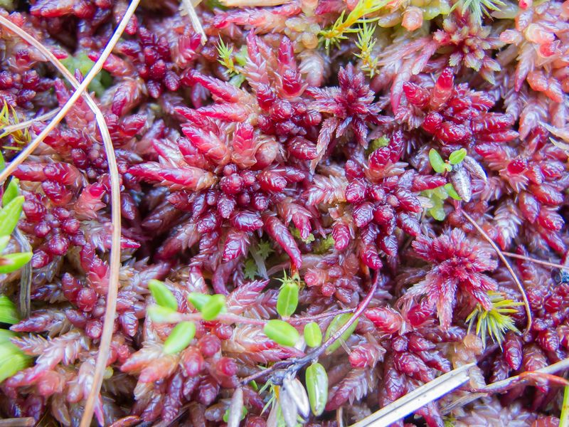

Mittlere Torfmoos
Sphagnum magellanicum
In den Hochmooren führen die vitalen Torfmoose Regie. Ihre Wasserspeicherzellen schützen das Moor vor Austrocknung. Durch raumgreifendes Wachstum produzieren sie nicht nur Torf, sondern verändern auch nachhaltig die Landschaft. Bei Wassermangel verbleichen die Sphagnen, weshalb sie auch "Bleichmoose" genannt werden. Dies vermittelt uns hier das Mittlere Torfmoos.